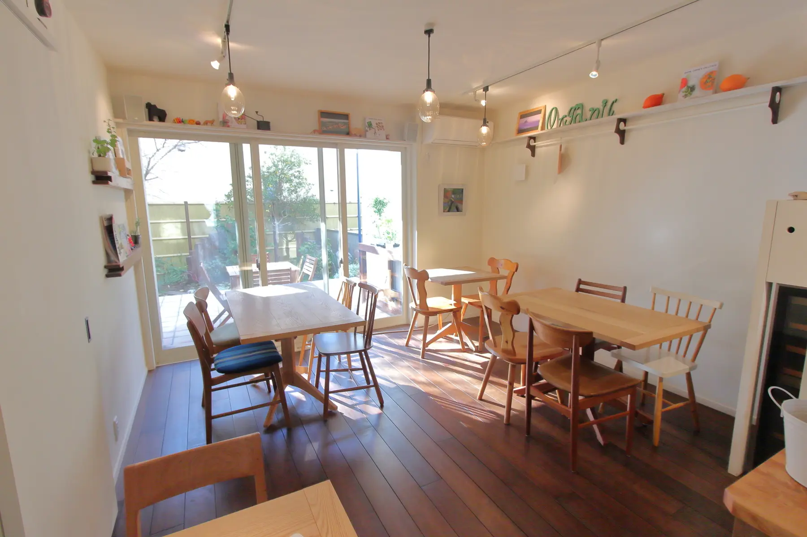
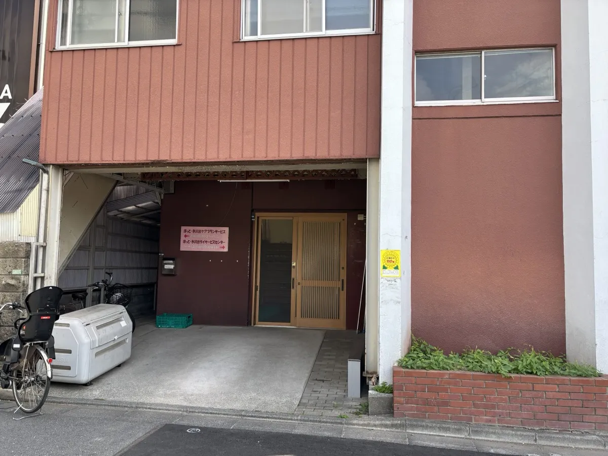
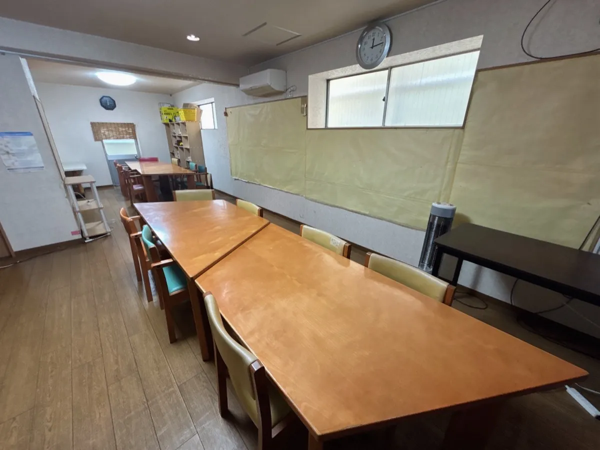
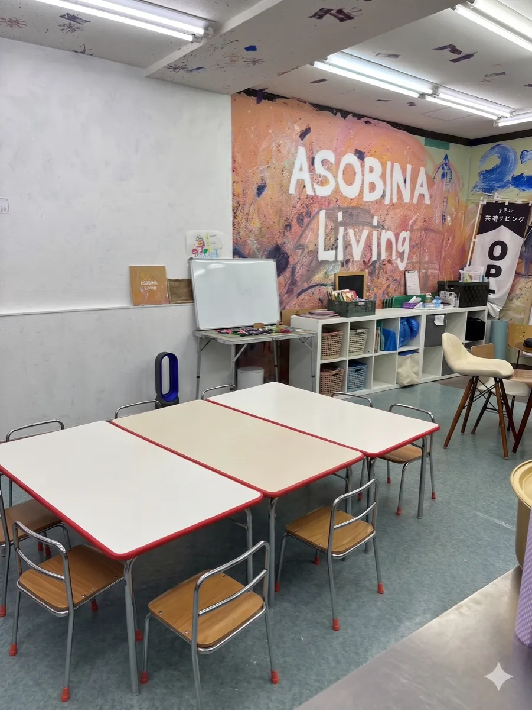
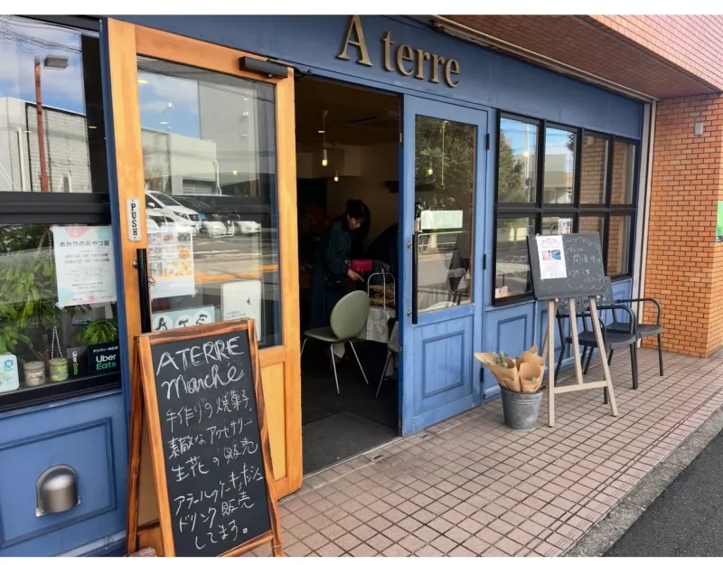
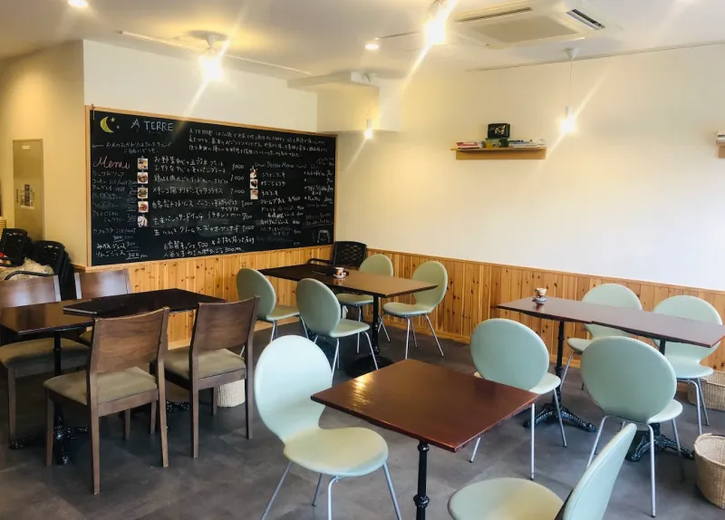

練馬東小・早宮小から近く、放課後に寄りやすい立地です。「早宮」は平和台・練馬春日町・豊島園にほど近いエリア。路地を入ったところで車通りが少なく安心して通わせられます。駐輪スペースも確保しています。
外観

内観

担当講師
中村 由美子
長年さまざまな事情を持つ子どもたちと関わってきた経験を活かし、一人ひとりのペースを大切に、急かさず丁寧に向き合っていきます。
毎月第2・4・5日曜日に私設児童館「だるまちゃんち」が開かれる「コモンズ氷川台」です。ライフのすぐ近くで、送り迎えついでにお買い物も済ませられます。
外観

内観

担当講師
太田 雅美
幼児教室・ベビーシッターの経験も豊富。「子どもたちと楽しく過ごしたい」という思いで講師になりました。笑顔あふれる教室を目指しています。
中村小・豊玉小から近く、放課後に寄りやすい立地です。低学年向けの机と椅子を使用しており、地に足がついて集中しやすい環境です。
外観

内観

担当講師
下 みゆき
塾講師経験と銀行17年の社会人経験を活かして指導します。数字の力はどんな時代にも役に立つと信じています。
住宅街の中で落ち着いて通える教室。駐輪スペースも確保しているので、自転車での送り迎えも安心です。
外観

内観

担当講師
準備中
Teachers
子どもたちに寄り添う3人の講師
講師
長年、さまざまな事情を持つ子どもたちと関わり続けてきました。子どもは一人ひとりペースが違う、ということを経験を通じて深く感じています。急かさず、でも諦めず、その子のタイミングを大切にしながら、そろばんを通じて集中力と達成感を育てていきたいと思っています。
講師
学生時代の塾講師経験と、銀行での17年間の経験を活かして指導にあたります。数字に強くなることは、どんな時代・どんな仕事でも必ず役に立つと信じています。地元に根ざした教室で、お子さんたちと一緒に力をつけていける日を楽しみにしています。
講師
以前からそろばん教室に興味を持っており、「子どもたちと楽しく過ごせる仕事をしたい」という思いで講師になりました。幼児教室やベビーシッターの経験もあり、小さなお子さんでも安心して通えるよう、笑顔あふれる教室を作っていきたいと思っています。